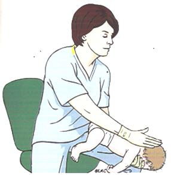
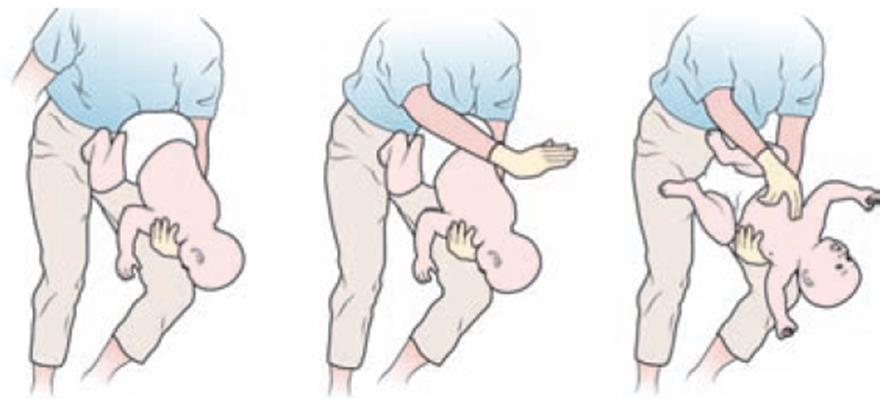
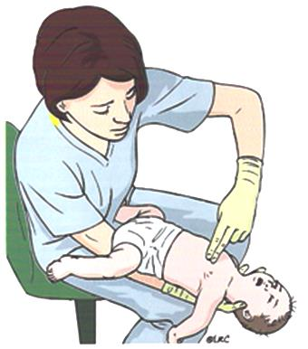
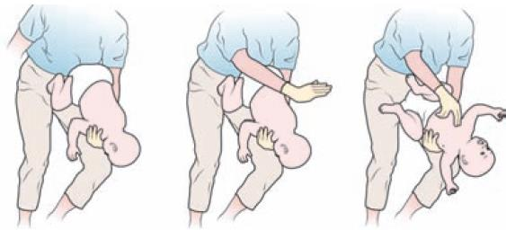
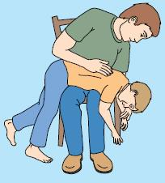
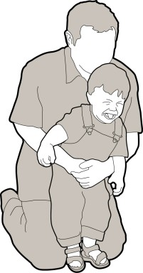

PRVA POMOČ PRI ZAPORI DIHALNE POTI PRI OTROCIH
Zapora dihalne poti je lahko popolna ali delna. Vzroki za zaporo dihalne poti so lahko kri, bruhanje, tujki (na primer zobje, hrana, igrače …), neposredna poškodba obraza ali vratu, otekanje žrela (lahko vnetje, pik žuželk …). Pri teh bolnikih je bistveno, da jim sprostimo dihalno pot. Prepoznava dušenja je bistvenega pomena, saj se na podlagi prepoznave odločimo, kako bomo ukrepali. Tujki lahko povzročijo blago ali hudo zaporo dihalne poti. Ko vidimo splošne znake dušenja (napad se lahko začne med jedjo ali igro, pri siljenju na kašelj …), je pomembno otroka vprašati: ''Ali se dušiš?'', in opazujemo otroka. Pri lažji zapori večji otroci odgovorijo, lahko jokajo, kašljajo, so pri zavesti in dihajo. Pri hudi zapori pa to ni mogoče. Takrat otrok ne more govoriti, jokati, lahko odgovori le s prikimavanjem in kretnjami. Lahko slišimo še tih zamolkel kašelj, zaradi nezmožnosti dihanja pa postane še modrikast. Ob tem se začne stopnja zavesti slabšati vse do nezavesti. K odstranjevanju tujkov v dihalni poti pristopimo samo, kadar smo prepričani, da je vzrok za težave otroka ali dojenčka tujek v dihalni poti.
PRVA POMOČ PRI LAŽJI ZAPORI DIHALNE POTI PRI DOJENČKIH IN OTROCIH
Otroka vzamemo v naročje, ga namestimo preko kolen tako, da mu glava rahlo visi navzdol, in ga spodbujamo h kašlju. Kašelj je namreč mnogo učinkovitejši kot katerakoli metoda za odstranjevanje tujkov.
PRVA POMOČ PRI HUDI ZAPORI DIHALNE POTI PRI DOJENČKIH (OD 0. do 1. LETA)
Dojenčka namestimo na podlahet svoje roke, obrnjenega na trebuh. Glava visi navzdol. Če je dojenček prevelik, ga namestimo v svoje naročje. Z zgornjim delom druge roke ga petkrat udarimo med lopaticama in po vsakem udarcu preverimo, ali smo bili uspešni. Če tujek ne izleti iz dihal, dojenčka namestimo s hrbtom naslonjenega na podlahet svoje roke, z glavo nagnjeno navzdol.

Slika 7: Udarci po hrbtu med lopaticama pri dojenčku (sede) (Vir: https://www.erc.edu)

Slika 8: Udarci po hrbtu med lopaticama pri dojenčku (stoje) (Vir: https://www.erc.edu)
V kolikor smo bili neuspešni, izvedemo pet pritiskov na prsni koš na istem mestu kot pri zunanji masaži srca s hitrostjo en pritisk v eni sekundi. Po vsakem pritisku preverimo uspešnost.

Slika 9: Pritiski na prsni koš pri dojenčku (sede) (Vir: https://www.erc.edu)

Slika 10: Pritiski na prsni koš pri dojenčku (stoje) (Vir: https://www.erc.edu)
Če dihalna pot še ni sproščena, izmenično ponavljamo pet udarcev med lopaticama in pet pritiskov na prsni koš. Če dojenček izgubi zavest, ga pazljivo položimo na tla in začnemo temeljne postopke oživljanja otrok. Včasih tujek prileti v usta šele ob masaži srca.
PRVA POMOČ PRI HUDI ZAPORI DIHALNE POTI PRI OTROCIH (OD PRVEGA LETA DO PUBERTETE)
Otroka z hudo zaporo dihalne poti namestimo v naročje, tako da lahko izvedemo udarce med lopaticama. Z zgornjim delom druge roke ga petkrat udarimo med lopaticama in po vsakem udarcu preverimo, ali smo bili uspešni.

Slika 11: Udarci po hrbtu med lopaticami v naročju (Vir: https://www.erc.edu)
Če s petimi udarci nismo bili uspešni, poskusimo s petimi pritiski na trebuh. Postavimo se za otroka na primerno višino in položimo obe roki na zgornji del trebuha. Otroka nagnemo naprej, eno roko stisnemo v pest in jo položimo na sredino med popkom in žličko. Z drugo roko primemo prvo in na kratko močno potisnemo navznoter in navzgor. Postopek ponovimo do petkrat.

Slika 12: Pritisk na trebuh pri otroku (Vir: https://www.erc.edu)
Če dihalna pot še ni sproščena, izmenično ponavljamo pet udarcev med lopaticama in pet pritiskov na trebuh, dokler nismo uspešni oziroma otrok ne izgubi zavesti. Če otrok izgubi zavest, ga pazljivo položimo na tla in začnemo temeljne postopke oživljanja otrok. Včasih tujek prileti v usta šele ob masaži srca.
Zaključek
Kakovostno oživljanje očividcev in zgodnja defibrilacija, če je potrebna, rešujeta življenje. Ob srčnem zastoju je potrebno hitro in učinkovito ukrepanje, za kar posamezniki potrebujejo znanje o posebnostih izvajanja temeljnih postopkov pri dojenčkih in otrocih.